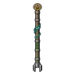

ภูตน้ำล้นประตู
มอนธาตุน้ำ Lv 74–84
เจอที่
| แมพ | โซน | Lv | ภูมิภาค |
|---|---|---|---|
| ประตูน้ำเก่า | 74–81 | เมืองหอระฆัง | |
| ประตูน้ำเก่า | เฟืองยักษ์ประตูน้ำ | 81–84 | เมืองหอระฆัง |
ค่าสถานะตามเลเวล
| Lv | HP | ATK | DEF | MDEF | EXP | Job |
|---|---|---|---|---|---|---|
| 74 | 39,342 | 100–150 | 21 | 29 | 99 | 74 |
| 79 | 47,616 | 109–162 | 22 | 31 | 105 | 79 |
| 84 | 57,408 | 117–175 | 24 | 33 | 111 | 83 |
ตีด้วยธาตุไหนดี
แรงขึ้น: ลม ×1.75
เบาลง: ไฟ ×0.5 น้ำ ×0.25
วัตถุดิบที่ดรอป
| ของ | โอกาส | |
|---|---|---|
| น้ำนิ่งในขวด | 55% | 1 ชิ้น (15% ได้ 2) |
อุปกรณ์ที่ดรอป (1)
| ของ | โอกาส |
|---|---|
 ไม้พลองภูตน้ำล้นประตู | 0.06% |
สกิล
ม่านเวท (Lv 25+) · ม่านเวท (Lv 60+) · วาร์ป (Lv 60+)